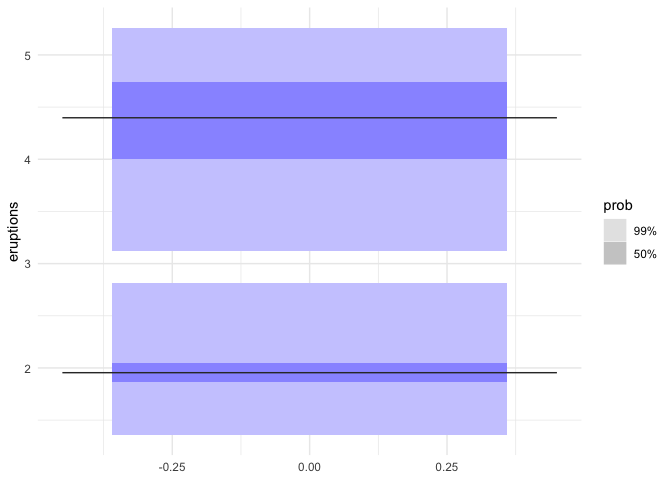

library(gghdr)
library(ggplot2)
ggplot(faithful, aes(y = eruptions)) +
geom_hdr_boxplot(prob = c(.5, 0.99), fill = "blue") +
theme_minimal()10 gghdr
Sayani07/gghdr 包来自github，目前该包已经从CRAN中移除，如需使用，请从github安装。
gghdr的主页：https://sayani07.github.io/gghdr/ gghdr的开发过程：
这里只介绍gghdr中geom_hdr_boxplot的实现原理，不涉及其它部分，包括但不限于R包的编写，图例的编写等。
与普通箱线图的区别:
- 多层箱体：普通箱线图（如
geom_boxplot）仅展示单一四分位数范围，而 HDR 箱线图通过prob参数展示多个概率层级，更直观反映数据密度分布。 - 模式线替代中位线：用众数（
mode）替代传统中位数线，强调数据分布的峰值位置。
下面利用gghdr绘制HDR箱线图的代码在最新的 ggplot2 v3.5.1 中已经无法运行，这里使用gghdr官网上的图片进行展示。

10.1 统计变换 stat
gghdr包使用hdrcde包来进行高度密度区域和条件密度的估计，通过自定义函数将估计结果转换成ggplot2能够使用的标准格式，省去了计算步骤。
这是StatHdrcde类的完整代码：
StatHdrcde <- ggproto("StatHdrcde", Stat,
required_aes = c("y"),
# non_missing_aes = "weight",
#setup_params = ggplot2::StatBoxplot$setup_params,
setup_data = function(data, params) {
# How are missing values handled?
data$x <- data$x %||% 0
data
},
compute_group = function(data, scales, width = NULL, probs = NULL, all.modes = TRUE, na.rm = FALSE) {
# 如果data$x有两个以上的值，那么width就是x的差值的90%
if (length(unique(data$x)) > 1)
width <- diff(range(data$x)) * 0.9
if(!all(data$x == data$x[1])){
# 如果x不全部相等
#stop("Conditional density estimation is not yet supported. Make sure each plot group contains only one x value.")
hdrcde_est <- hdrcde::cde(data$x, data$y)
hdr_stats <- hdrcde::hdr.cde(hdrcde_est, prob = probs*100, plot = F)
one_cde_row <- function(idx, hdrcde_est, hdr_stats) {
# 转置hdr_stats$hdr
hdr <- t(hdr_stats$hdr[[idx]])
max_boxes <- ncol(hdr)/2
# 初始化一个空的data.frame，使用structure()函数能够更好的控制data.frame的结构。
df <- structure(list(), .Names = character(0), row.names = c(NA, -1L), class = "data.frame")
# col(hdr) %% 2 col(hdr)的每一列除以2的余数，col()函数返回矩阵中的值的列号
box <- split(hdr, col(hdr) %% 2)
# 判断box是否有NA值
is_box <- complete.cases(box)
df$prob <- list(rep(sort(probs, decreasing = TRUE), max_boxes))
df$box <- list(matrix(
c(box[[2]], box[[1]]), ncol = 2,
dimnames = list(NULL, c("lower", "upper"))
))
df$ymax <- max(box[[1]], na.rm = TRUE)
df$ymin <- min(box[[2]], na.rm = TRUE)
df$mode <- list(hdr_stats$modes[idx,1])
df$width <- hdrcde_est$x[2] - hdrcde_est$x[1]
df$x <- hdrcde_est$x[idx]
df$x_cde <- hdrcde_est$x[idx]
df
}
do.call(rbind, lapply(seq_along(hdrcde_est$x), one_cde_row, hdrcde_est, hdr_stats))
} else {
# imported from hdrcde
hdr_stats <- hdrcde::hdr(data$y, prob = probs*100, all.modes = all.modes)
hdr <- hdr_stats$hdr
# number of boxes (for all probabilities max number of boxes will be shown although it has got NA values)
max_boxes <- ncol(hdr)/2
# initialise 1 row data.frame
df <- structure(list(), .Names = character(0), row.names = c(NA, -1L), class = "data.frame")
box <- split(hdr, col(hdr) %% 2)
is_box <- complete.cases(box)
df$prob <- list(rep(sort(probs, decreasing = TRUE), max_boxes)[is_box])
df$box <- list(matrix(
c(box[[2]], box[[1]]), ncol = 2,
dimnames = list(NULL, c("lower", "upper"))
)[is_box,])
df$ymax <- max(box[[1]], na.rm = TRUE)
df$ymin <- min(box[[2]], na.rm = TRUE)
# keep only modes within boxes
mode_proxy <- matrix(0, length(hdr_stats$mode), df$ymax)
for(i in 1:length(hdr_stats$mode))
{
for(j in 1:length(df$ymax))
if(hdr_stats$mode[i]<=df$ymax[j] & hdr_stats$mode[i]>= df$ymin[j])
{
mode_proxy[i, j] <- 0
}
else mode_proxy[i, j] <- 1
}
hdr_mode <- hdr_stats$mode[which(rowSums(mode_proxy)==0)]
df$mode <- list(hdr_mode)
df$width <- width
df$x <- unique(data$x) # FIX LATER
df
}
}
)这里有三个关键的部分：
-
setup_data函数：
setup_data = function(data, params) {
# How are missing values handled?
data$x <- data$x %||% 0
data
}如果data\(x的值不为空，则使用data\)x，否则赋值为0。这里保证了data\(x是有值的。一般情况下，ggplot2处理数据时会添加data\)x的值。
-
compute_group函数中if判断的第一部分（如果data$x不全部相等，也就是data$x这一列数据出现两种或以上的值）：
if(!all(data$x == data$x[1])){
# 如果x不全部相等
#stop("Conditional density estimation is not yet supported. Make sure each plot group contains only one x value.")
hdrcde_est <- hdrcde::cde(data$x, data$y)
hdr_stats <- hdrcde::hdr.cde(hdrcde_est, prob = probs*100, plot = F)
one_cde_row <- function(idx, hdrcde_est, hdr_stats) {
# 转置hdr_stats$hdr
hdr <- t(hdr_stats$hdr[[idx]])
max_boxes <- ncol(hdr)/2
# 初始化一个空的data.frame，使用structure()函数能够更好的控制data.frame的结构。
df <- structure(list(), .Names = character(0), row.names = c(NA, -1L), class = "data.frame")
# col(hdr) %% 2 col(hdr)的每一列除以2的余数，col()函数返回矩阵中的值的列号
# 这里将hdr中的列按照奇数列和偶数列分开
box <- split(hdr, col(hdr) %% 2)
# 判断box是否有NA值
is_box <- complete.cases(box)
df$prob <- list(rep(sort(probs, decreasing = TRUE), max_boxes))
# 将分开的box重新合并为矩阵
df$box <- list(matrix(
c(box[[2]], box[[1]]), ncol = 2,
dimnames = list(NULL, c("lower", "upper"))
))
df$ymax <- max(box[[1]], na.rm = TRUE)
df$ymin <- min(box[[2]], na.rm = TRUE)
df$mode <- list(hdr_stats$modes[idx,1])
df$width <- hdrcde_est$x[2] - hdrcde_est$x[1]
df$x <- hdrcde_est$x[idx]
df$x_cde <- hdrcde_est$x[idx]
df
}
do.call(rbind, lapply(seq_along(hdrcde_est$x), one_cde_row, hdrcde_est, hdr_stats))
}首先，利用hdrcde::cde()和hdrcde::hdr.cde()两个函数计算条件密度分布，然后利用自定义函数one_cde_row()处理计算结果。最后用do.call()函数和合并所有结果。通过这些步骤，实现了对条件密度估计结果的处理，并将其转换为 ggplot2 能够使用的标准格式。
-
compute_group函数中if判断的else部分（data$x的值全部相等）：
else {
# imported from hdrcde
hdr_stats <- hdrcde::hdr(data$y, prob = probs*100, all.modes = all.modes)
hdr <- hdr_stats$hdr
# number of boxes (for all probabilities max number of boxes will be shown although it has got NA values)
max_boxes <- ncol(hdr)/2
# initialise 1 row data.frame
df <- structure(list(), .Names = character(0), row.names = c(NA, -1L), class = "data.frame")
box <- split(hdr, col(hdr) %% 2)
is_box <- complete.cases(box)
df$prob <- list(rep(sort(probs, decreasing = TRUE), max_boxes)[is_box])
df$box <- list(matrix(
c(box[[2]], box[[1]]), ncol = 2,
dimnames = list(NULL, c("lower", "upper"))
)[is_box,])
df$ymax <- max(box[[1]], na.rm = TRUE)
df$ymin <- min(box[[2]], na.rm = TRUE)
# keep only modes within boxes
mode_proxy <- matrix(0, length(hdr_stats$mode), df$ymax)
for(i in 1:length(hdr_stats$mode))
{
for(j in 1:length(df$ymax))
if(hdr_stats$mode[i]<=df$ymax[j] & hdr_stats$mode[i]>= df$ymin[j])
{
mode_proxy[i, j] <- 0
}
else mode_proxy[i, j] <- 1
}
hdr_mode <- hdr_stats$mode[which(rowSums(mode_proxy)==0)]
df$mode <- list(hdr_mode)
df$width <- width
df$x <- unique(data$x) # FIX LATER
df
}这里的处理过程和上面的基本相同，需要注意的是，这里使用了mode_proxy来对mode进行处理，以保证只有位于盒子内部的mode被保留。
10.2 几何对象 geom
geom_hdr_boxplot形似箱线图，由矩形和线段组成，因此在绘图层面上，直接使用GeomRect$draw_panel()和GeomSegment$draw_panel()这两个已有的几何对象完成图形的绘制。
以下为GeomHdrBoxplot类的源码：
GeomHdrBoxplot <- ggproto("GeomHdrBoxplot", Geom,
# need to declare `width` here in case this geom is used with a stat that
# doesn't have a `width` parameter (e.g., `stat_identity`).
extra_params = c("na.rm", "width"),
setup_data = function(data, params) {
data$width <- data$width %||%
params$width %||% (resolution(data$x, FALSE) * 0.9)
data$xmin <- data$x - data$width / 2
data$xmax <- data$x + data$width / 2
# data$width <- NULL
# data$outliers <- NULL
data
},
draw_group = function(data, panel_params, coord, varwidth = FALSE,
prob = c(0.5, 0.95, 0.99)) {
fill_shade <- darken_fill(rep_len(data$fill, length(data$prob[[1]])), data$prob[[1]])
common <- list(
size = data$size,
linetype = data$linetype,
group = data$group,
alpha = NA
)
num_boxes <- sapply(data$box, nrow)
num_probs <- sapply(data$prob, length)
#ignore dodged widths if doing cde
if (nrow(data) > 1) {
data$xmin <- data$x_cde - data$width / 2
data$xmax <- data$x_cde + data$width / 2
}
box <- tibble::as_tibble(c(
list(
#Expand out packed HDR box specifications
xmin = rep(data$xmin + 0.1* (data$xmax-data$xmin), times = num_boxes),
xmax = rep(data$xmax - 0.1* (data$xmax-data$xmin), times = num_boxes),
# 这两行代码使用 lapply 对 data$box 列中的每个元素应用一个匿名函数，
# 提取每个矩阵的 "lower" 和 "upper" 列，并使用 unlist 将结果转换为向量。
ymin = unlist(lapply(data$box, function(b) b[,"lower"])),
ymax = unlist(lapply(data$box, function(b) b[,"upper"])),
fill = rep(scales::alpha(fill_shade, unique(data$alpha)), length.out = sum(num_probs)),
colour = NA
),
lapply(common, rep, length.out = sum(num_boxes))
))
mode <- tibble::as_tibble(c(
list(
x = data$xmin,
xend = data$xmax,
y = unlist(data$mode),
yend = unlist(data$mode),
colour = data$colour
),
common
), n = length(data$mode[[1]]))
ggplot2:::ggname("geom_hdr_boxplot", grid::grobTree(
ggplot2::GeomRect$draw_panel(box, panel_params, coord),
ggplot2::GeomSegment$draw_panel(mode, panel_params, coord)
))
},
draw_key = draw_key_hdr_boxplot,
default_aes = aes(weight = 1, colour = "grey20", fill = "black", size = 0.5,
alpha = NA, shape = 19, linetype = "solid", prob = NA),
required_aes = c("ymax", "ymin", "box"),
optional_aes = "prob"
)-
setup_data函数
setup_data = function(data, params) {
data$width <- data$width %||%
params$width %||% (resolution(data$x, FALSE) * 0.9)
data$xmin <- data$x - data$width / 2
data$xmax <- data$x + data$width / 2
data
}对输入的数据进行预处理，设置图形的宽度和位置。data 是包含绘图数据的 data.frame ，params 是额外的参数。如果 data 中没有 width 列，则从 params 中获取，若都没有，则使用默认宽度 resolution(data$x, FALSE) * 0.9 。
xmin 和 xmax，分别表示图形的左右边界。
-
draw_group函数
- 填充颜色深浅：通过
darken_fill函数根据概率值调整颜色透明度（alpha），概率越高的区域颜色越深。 - 组数据时的宽度处理：当数据存在多行（
nrow(data) > 1）时，使用x_cde列重新计算箱体边界（data$xmindata$xmax），避免重叠。 - 构建箱体数据：计算
xmin,xmax,ymin,ymax，再与common组合成绘图数据，这里使用num_boxes来确保数据框的行数一致。
box <- tibble::as_tibble(c(
list(
#Expand out packed HDR box specifications
xmin = rep(data$xmin + 0.1* (data$xmax-data$xmin), times = num_boxes),
xmax = rep(data$xmax - 0.1* (data$xmax-data$xmin), times = num_boxes),
# 这两行代码使用 lapply 对 data$box 列中的每个元素应用一个匿名函数，
# 提取每个矩阵的 "lower" 和 "upper" 列，并使用 unlist 将结果转换为向量。
ymin = unlist(lapply(data$box, function(b) b[,"lower"])),
ymax = unlist(lapply(data$box, function(b) b[,"upper"])),
fill = rep(scales::alpha(fill_shade, unique(data$alpha)), length.out = sum(num_probs)),
colour = NA
),
lapply(common, rep, length.out = sum(num_boxes))
))- 构建模式线数据：使用
data$mode中的众数值，生成横跨箱体宽度的水平线段。通过n = length(data$mode[[1]])来控制行数。
- 合并图形元素：使用
grid::grobTree将箱体和模式线组合为单一图形对象，并通过ggname命名以便图例管理。
ggplot2:::ggname("geom_hdr_boxplot", grid::grobTree(
ggplot2::GeomRect$draw_panel(box, panel_params, coord),
ggplot2::GeomSegment$draw_panel(mode, panel_params, coord)
))